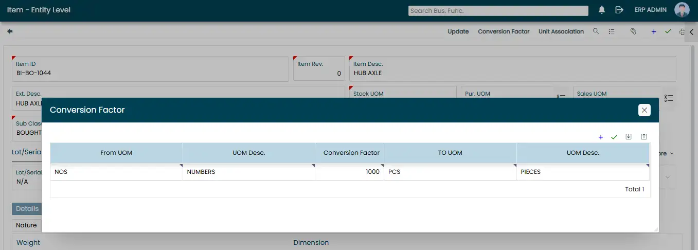

<div data-category="Inventory Control" data-title="Item Conv. Factor" data-updated="January 27, 2026" data-contributors="RoadmapIT" data-breadcrumb="Home,Inventory Control,Item Conv. Factor">
  <div class="page-content">
    <p>This is the master setup for defining the Conversion Factor of Items where the user can enter and manage the conversion factors for different units of measure for different items or products that they want to use in their inventory system. The user can fill in the required and optional fields for each conversion factor, such as from unit, to unit, and description. The user can also add or remove conversion factors as needed</p>
    <h5>Navigation path:</h5>
    <p class="fs-6">Supply Chain Management \ Inventory \ Setup \ Items</p>
    
    <ul style="list-style-type: none; align-content: center">
      <li class="mouse-icon">Click on Conv. Factor Button</li>
      <li class="mouse-icon">
        Click
        <i class="bi bi-plus fs-4 mx-2 text-primary"></i>
        button to create conversion factor
      </li>
      <li class="mouse-icon">Select From UOM; description will be automatically populated.</li>
      <li class="mouse-icon">Enter Conversion Factor.</li>
      <li class="mouse-icon">Select To UOM from LOV.</li>
      <li class="mouse-icon">
        Click
        <i class="bi bi-check-lg fs-4 mx-1 text-success"></i>
        to save Item Conv. Factor.
      </li>
    </ul>
  </div>
</div>
